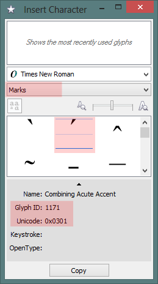
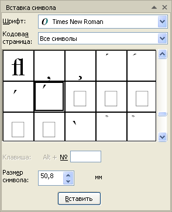

Объясните, есть ли возможность ставить ударения в текстах?
Sobakin / 06.03.2014, 18:53
Форум:
Версия программы:
16.0.0.707
Мне заказали сверстать брошюру с молитвами на старорусском языке, а в тексте в каждом слове - ударение. Чтобы люди понимали в аки-паки как это все читать. Я никогда раньше не сталкивался с таким количеством ударений - 21 старница и в каждом слове ударения. Я хотел бы узнать как в Кореле расставлять ударения? Помогите пожалуйста советом. За двенадцать лет практики я с подобным не сталкивался.
Если в Ворде ударения уже расставлены, то они должны нормально перенестись в CorelDRAW.
Если же нужно расставлять именно в CorelDRAW, тогда вот:

Спасибо!
Sancho, а Marks доступны только для шрифтов с прописанными глифами? у меня есть только выбор кодовой страницы.
natibor, Marks доступны только в нормальных OTF шрифтах, насколько я знаю. В любом случае, если символ есть в шрифте, его можно найти и без этого.
я нашла только отдельные символы с диакритическими знаками.
natibor,

ага, да, спасибо. разобралась :)